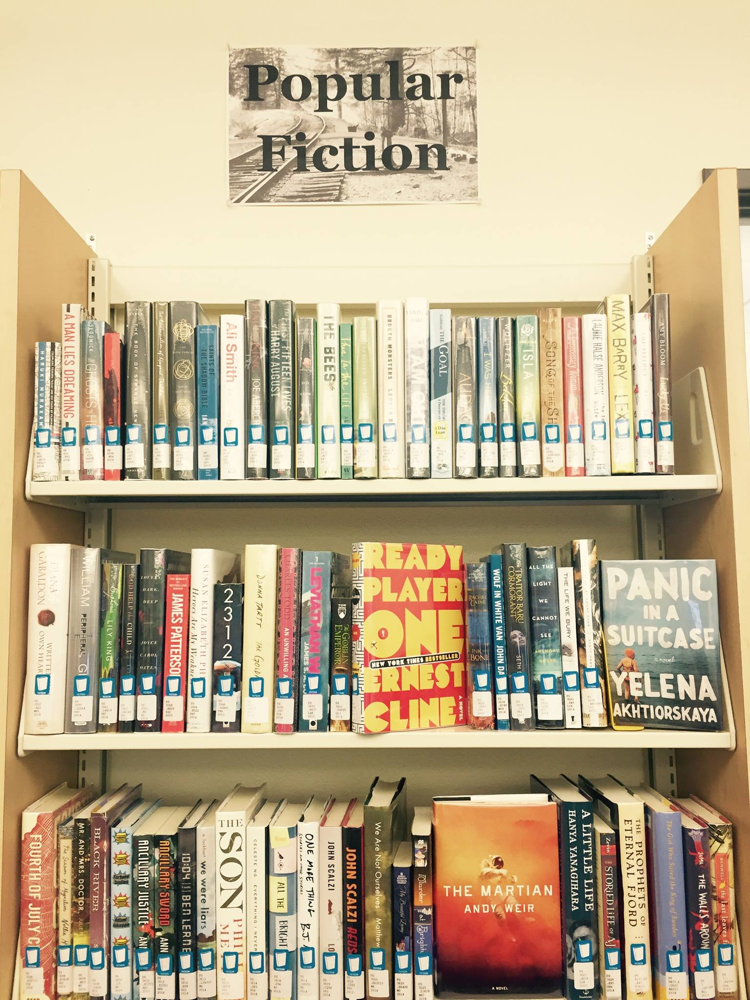
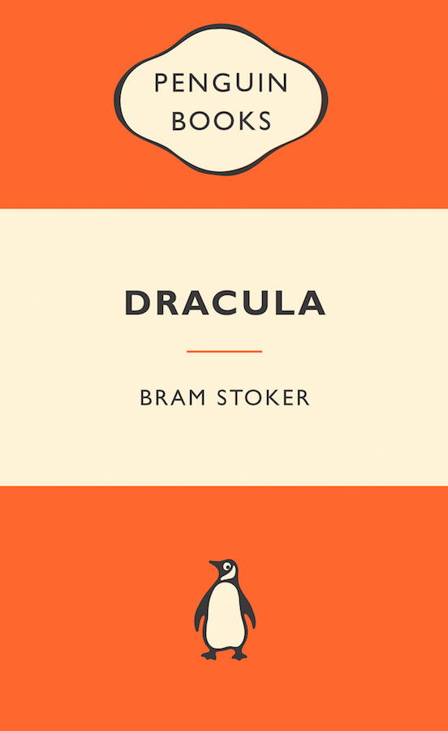
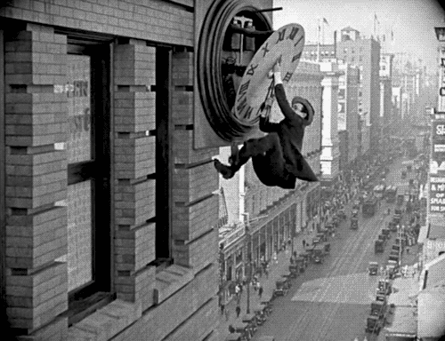
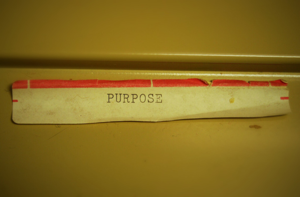
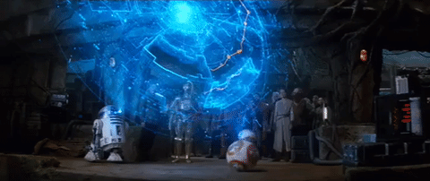

Connecting with Ideas
Critically Evaluating Resources

To follow along, load this in your browser: http://www.ryanpatrickrandall.com/talks/cwid101.html
Created by Ryan P. Randall
Hello!
I'm Ryan Randall, from the library!
I'm here to help you prepare for your next assignment. And the rest of your classes, to be honest.
What have you already done in the library?
- Printing?
- Used the textbooks on reserve?
- Used one of our many computers?
- Requested an article or book?
- Used the online chat?
- Used the anatomical models?
Have your kids used the children's section?

Did you come dressed up for Halloween?
Read from our Popular Fiction sections?

Here's some more library resources!
- Databases—including movies!
- Research Guides that help you know where to start!
- Schedule an Appointment with a Librarian—hey, it's free!
- Book a Group Study Room—we've got two of them!
CRAAP evaluation
"Don't Judge a Book by Its Cover"

- That's helpful advice, sometimes.
- But what do you judge sources by?
CRAAP evaluation
- Currency
- Relevance
- Authority
- Accuracy
- Purpose
Blakeslee, S. (2004). The CRAAP test.
Currency

- When was this source published?
- The timeframe of some information is crucial.
Relevance

- Why is this right for this assignment?
- Are its approach and depth suitable for your purposes?
Authority
- Who wrote this?
- Do they have appropriate expertise on this subject?
Accuracy

- How does this source support its claims?
- Can you check where the authors got their facts & examples?
Purpose

- Why was this written?
- Is the author trying to benefit personally from this?
CRAAP evaluation
- Currency
- Relevance
- Authority
- Accuracy
- Purpose
Blakeslee, S. (2004). The CRAAP test.
Test or Guidelines?

- The CRAAP test is a starting point for prudent skepticism, not a simple litmus test.
Map Your Research Process

Take two minutes to write an overview of how and where you research things.
What did your overview include?


What's this about "Fake News?"
Facebook Echo Chambers
- Blue Feed, Red Feed from the Wall Street Journal
Fake News Examples
Let's Break "Fake News" Down
- misinformation unintentionally false
- disinformation intentionally false
- propaganda false and usually emotionally manipulative
How to Spot Fake News
This handout could help!
Why Does Fake News Exist?
This LA Times article suggests it's most often about money.
What are the consequences of fake news?
Well, at Comet Pizza, "Fake News Brought Real Guns"
For more…
We could talk a lot more about this!
UW even has a whole class about reasoning in a digital world. Check it out if you care about this stuff.
Let's get cracking!
Search for a couple articles related to your topic and fill out this worksheet.
After eight minutes, let's talk about what you found.
How did this go? Let me know at http://bit.ly/cwilif!
Keep in touch with the CWI Library
Please schedule an appointment with a CWI Librarian if you'd like further research assistance.
You can also get help from the College of Western Idaho Libraries through our online chat, our FAQ pages, calling or texting us, and email!
Thank you for your time!
Sources
"Pulling a book off the shelf" photo by Bennington College's Crossett Library with a CC BY-NC-SA 2.0 license.Blakeslee, S. (2004). The CRAAP test. LOEX Quarterly, 31(3), 6-7. Retrieved from http://commons.emich.edu/loexquarterly/vol31/iss3/4.
"Purpose" photo by Seth Sawyers with a CC BY 2.0 license and given some minimal filtering by Ryan. "Reflect • Learn • Connect" photo by Seattle Community Colleges with a CC BY-NC-SA 3.0 license.